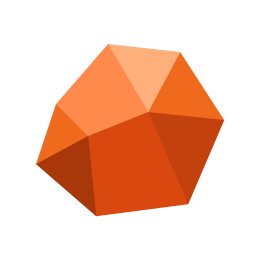
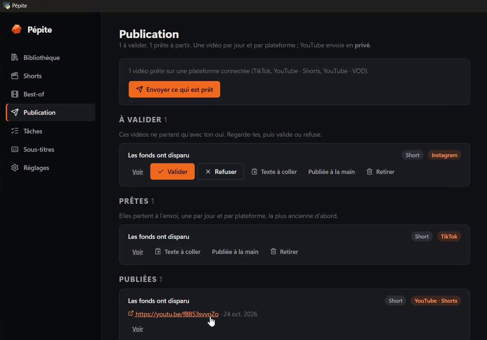

Pépite
Les meilleurs moments de vos streams, sans y passer vos soirées.
Pépite est un atelier pour streamers. À partir d'une VOD enregistrée avec OBS, il repère les fous rires, les frayeurs, les exploits et les anecdotes, les monte en shorts verticaux ou en best-of, puis prépare leur mise en ligne.
- Tout reste sur votre ordinateur : l'analyse, la transcription et l'intelligence artificielle tournent en local. Pas de compte, pas de serveur, pas de pistage.
- Des montages soignés : mise en page selon le moment, sous-titres mot à mot, effets, son mis au niveau des plateformes.
- Vous gardez la main : chaque montage se relit et se corrige avant d'être publié sur votre propre chaîne.
- Votre vie privée d'abord : une adresse donnée à voix haute dans un live est repérée, et vous décidez de couper le son avant la mise en ligne.

Comment ça marche
- Vous enregistrez votre live avec OBS, la micro, Discord, le jeu et le système sur des pistes audio séparées.
- Pépite analyse la VOD sur votre ordinateur : rires, cris, volume, transcription, tchat, scènes. Chaque moment retenu porte les signaux qui l'ont fait choisir.
- Vous relisez les moments proposés, notez les meilleurs et corrigez les bornes, les sous-titres et la mise en page dans l'éditeur.
- Pépite monte le short vertical (ou le best-of) avec sous-titres mot à mot, effets et son mis au niveau des plateformes.
- Vous publiez : chaque vidéo passe par une file de publication, et rien ne part sans votre accord.
Ce que fait Pépite
- Repérage des fous rires, frayeurs, rages, exploits et anecdotes, avec un score explicable.
- Shorts verticaux 1080 × 1920 : caméras empilées, jeu plein cadre, caméra en bulle, discussion.
- Best-of par stream, hebdomadaires, mensuels ou par jeu.
- Éditeur de montage : timeline, pistes, bruitages, effets d'image, ralenti.
- Détection des adresses prononcées à voix haute, pour couper le son avant la mise en ligne.
- Fonctionne aussi avec une seule piste audio, par exemple une VOD YouTube.
Publication sur vos comptes
Pépite publie uniquement sur vos propres comptes, après connexion avec votre autorisation. Vous pouvez la retirer à tout moment depuis les réglages de sécurité de la plateforme.
- YouTube : envoi des vidéos que vous avez choisies sur votre chaîne.
- TikTok : connexion avec Login Kit, puis envoi dans les brouillons
de votre compte (autorisation
video.upload) ; c'est vous qui terminez et publiez depuis l'application TikTok. Pépite lit aussi votre nom et votre avatar (user.info.basic) pour afficher le compte connecté. - Instagram : à terme.
Disponibilité
Pépite est un outil personnel pour Windows (et Linux), distribué pour l'instant en privé. Il se connecte à votre chaîne YouTube, avec votre autorisation, pour y envoyer les vidéos que vous avez choisies.
Vos données
L'éditeur de Pépite ne reçoit ni ne conserve aucune donnée sur ses utilisateurs. Tout est expliqué dans la politique de confidentialité, y compris l'usage des services de l'API YouTube.